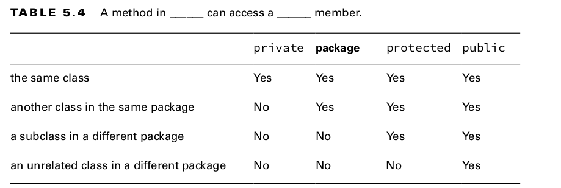

Access Modifiers
Table of Contents
1. Access Modifiers
Determines what classes a method can be accessed from.

1.4. Public Access Modifier
1.4.1. Exam Trick
While Access Modifiers and Optional Specifiers can appear in any order, they must all appear before the Return Type.
Remember, Access Modifiers and Optional Specifiers can be listed in any order, but once the Return Type is specified, the rest of the parts of the method are written in a specific order:
nameparameter listexception listbody